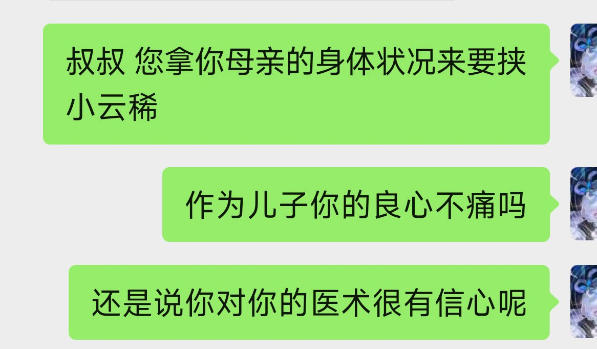
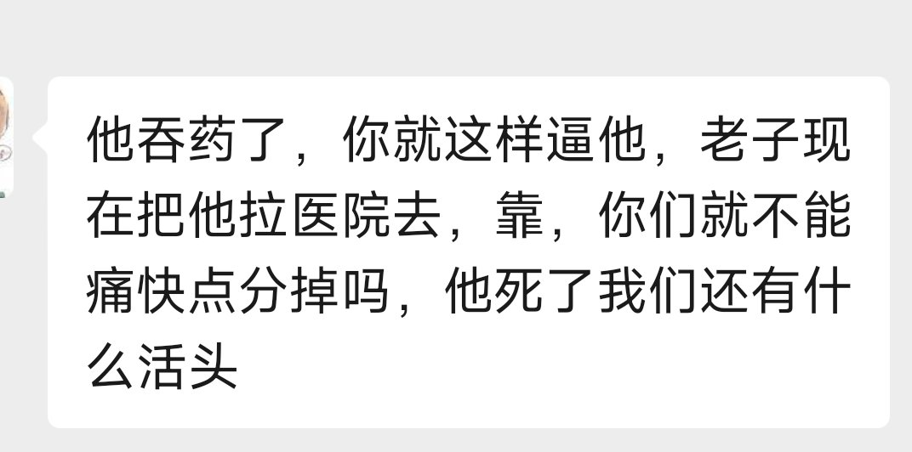

RT @yue_li0712: 你TM不是一直在监视吗，一直在旁边看着吗，看着自己的孩子吞药这种畜牲事都tm干出来了，还TM怪我，你TM强迫云稀要么选择向她奶奶坦白，要么选择停止吃药和分手，我倒是可以选择和她分手啊，为了她，她自己愿意吗愿意停药吗，你拿你孩子和你母亲的感情来要挟…



你TM不是一直在监视吗，一直在旁边看着吗，看着自己的孩子吞药这种畜牲事都tm干出来了，还TM怪我，你TM强迫云稀要么选择向她奶奶坦白，要么选择停止吃药和分手，我倒是可以选择和她分手啊，为了她，她自己愿意吗愿意停药吗，你拿你孩子和你母亲的感情来要挟她，你特么还是人吗 https://t.co/UrB1rISLLW